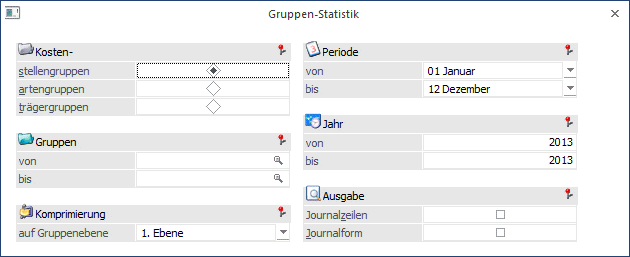
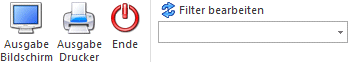
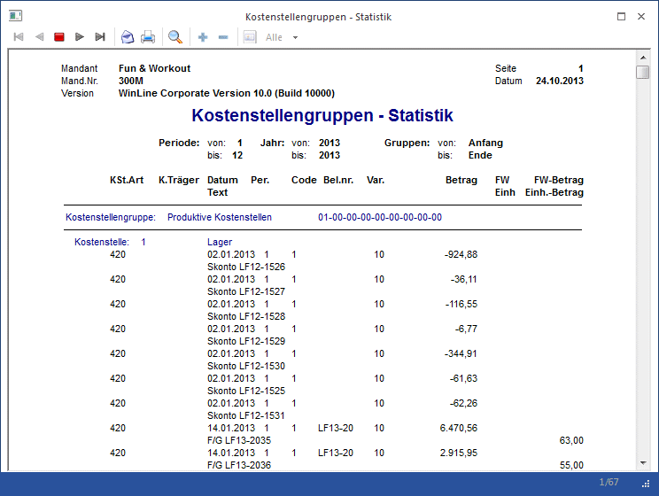
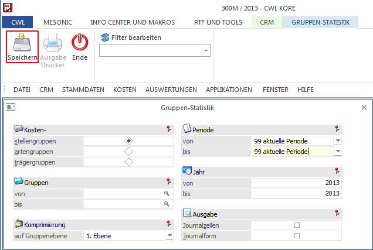

Die Gruppen-Statistik kann unter dem Menüpunkt
1 Auswertungen
1 Gruppenstatistik
oder Schnellaufruf
1 STRG + G
aufgerufen werden.

In der Gruppen-Statistik können selektiv
ü Kostenstellengruppen
ü Kostenartengruppen
ü Kostenträgergruppen ausgewertet werden.
Selektionskriterien
Ø Gruppen von - bis
Selektieren Sie die Ausgabe durch Eingabe der Gruppennummer. Wird die Eingabe mit ENTER übergangen, ohne eine Nummer einzugeben, werden automatisch alle Gruppen ausgewertet.
Damit die Gruppen mit allen Ebenen richtig übernommen werden, empfehlen wir die Suche mit dem Gruppenmatchcode oder F9 zur Übernahme. Sie erhalten automatisch die Gruppen mit allen Unterebenen als Vorschlag eingetragen.
Ø Komprimierung
Geben Sie die Ebene ein, auf welcher die Komprimierung der Statistik erfolgen soll. Die Summierung der Gruppen-Statistik erfolgt ab der ausgewählten Gruppenebene inkl. aller weiteren Unterebenen.
Ø Periode von - bis
Selektieren Sie die Perioden, die in die Auswertung einbezogen werden sollen. Wird die Auswahl ohne Eingabe übergangen, werden automatisch alle Perioden ausgewertet.
Ø Jahr von - bis
Selektieren Sie das Jahr bzw. die Jahre, die in die Auswertung einbezogen werden sollen. Wird die Auswertung ohne Eingabe übergangen, wird automatisch das aktuelle Jahr vorgeschlagen.
Ø Ausgabe
Die Ausgabe kann am Bildschirm oder über den Drucker erfolgen.
Ø Journalzeilen
Durch Aktivieren der Checkbox werden alle erfassten Journalzeilen angedruckt, nicht nur eine Summenzeile pro Kostenart.
Ø Journalform
Durch Aktivieren der Checkbox wird die Auswertung in Journalform ausgegeben und nicht in Kontoblattform (bei der jede Gruppe auf einer neuen Seite beginnen würde).
Buttons

Ø Ausgabe Bildschirm
Die Statistik wird am Bildschirm ausgegeben.
Ø Ausgabe Drucker
Die Statistik wird am Drucker ausgegeben.
Ø Ende
Durch Drücken der ESC-Taste wird das Fenster geschlossen, alle ausgewählten Kriterien gehen verloren.
Ø Filter bearbeiten
Es gibt es die Möglichkeit, einen sogenannten "Filter" zu definieren. Mit diesem Filter können zusätzliche Selektions- und Sortierkriterien hinterlegt werden. Z.B. können die Journalzeilen unter Zuhilfenahme des Filters "nach div. Kriterien sortiert" ausgegeben werden. Die einzelnen Definitionen können auch fix mit einem eigenen Filternamen gespeichert werden.
Beispiel einer Kostenstellengruppen-Statistik mit Journalzeilen:

Besonderheiten beim Aufruf dieses Fensters aus dem Menüpunkt "Reportdefinition"

Ø Periode
In der Auswahllistbox steht auch der Eintrag "99 aktuelle Periode" zur Verfügung. Falls dieser Eintrag gewählt wurde, wird bei der Vorschau des Reports bzw. beim Erzeugen des Reports die Periode mit der Periode des aktuellen Systemdatums belegt.
Ø Speichern
Die Auswahl Bildschirm/Drucker steht nicht zur Verfügung, stattdessen ist nun an dieser Stelle der Speicher-Button.
Ø Ausdruck
Auf der letzten Seite der Ausgabe wird das Datum der Erstellung angedruckt.